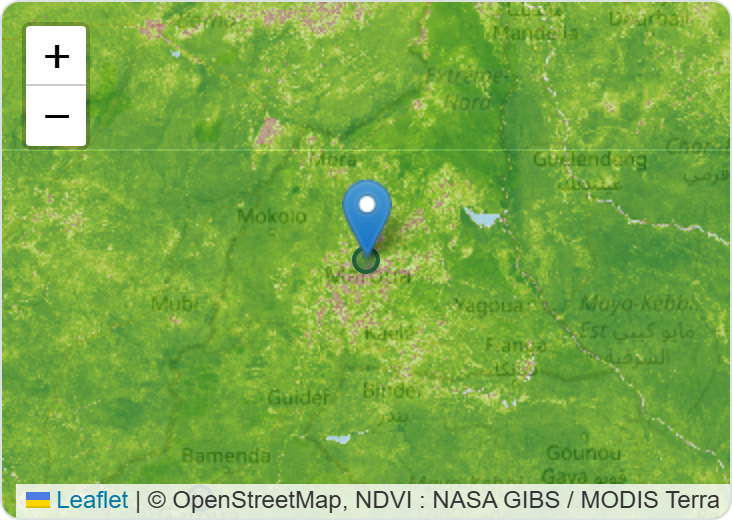
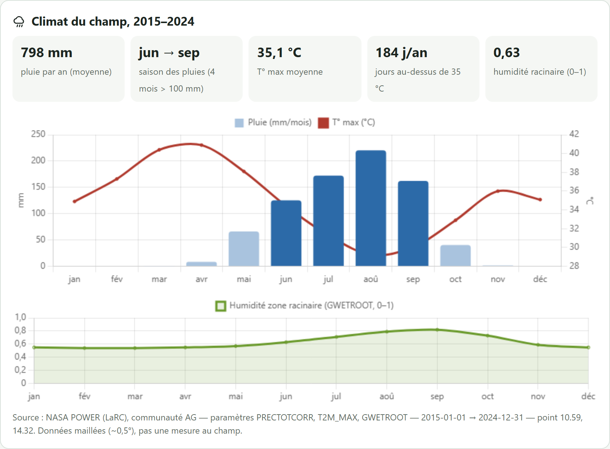
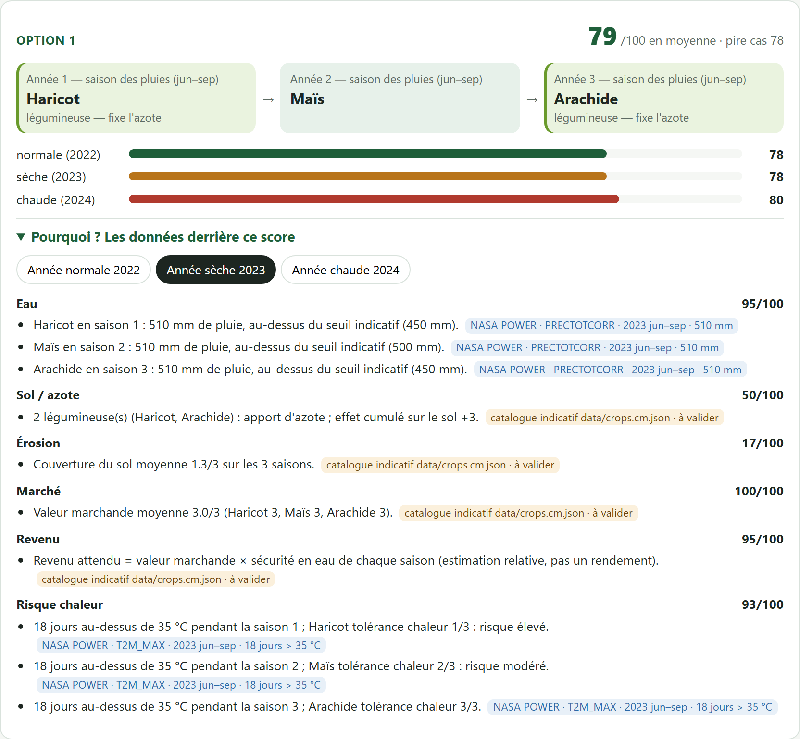

Maroua, Extrême-Nord du Cameroun — pluie mesurée par la NASA
856 mmen 2022
640 mmen 2023
Quelle culture semer après le maïs ?
RotaSat croise trois choses
10 ans de données NASApluie, chaleur, humidité du sol
Le sol de l'agriculteurtexture, pH, matière organique
Ses prioritéseau, fertilité, érosion, marché, revenu
et propose 3 rotations de cultures, expliquées.
Étape 1
Le climat réel du champ
Dix ans de mesures NASA POWER pour le point choisi sur la carte.
La végétation vue par le satellite MODIS, avec NASA GIBS.


Étape 2
Un stress test sur 3 années réelles

Une année normale, une année sèche, une année chaude : choisies dans l'historique, jamais inventées.
Étape 3
Chaque score cite sa donnée
Le bouton « Pourquoi ? » montre la source, le paramètre, la période et la valeur.
NASA POWER · PRECTOTCORR · 2023 jun–sep · 510 mm

Pensé pour le terrain
Fonctionne hors lignesur le téléphone, pour les zones enregistrées
Répond par SMS
NIEBE MAROUA
RotaSat Maroua: Arachide>Mais>Niebe 77/100. Annee seche 2023 (510 mm en saison): 76/100. A valider avec technicien MINADER.
RotaSat Cameroun
L'outil appuie le jugement de l'agriculteur. Il ne le remplace pas.
NASA Space Apps 2026 — Field Shift · github.com/Jephtetekeu/RotaSat-cm